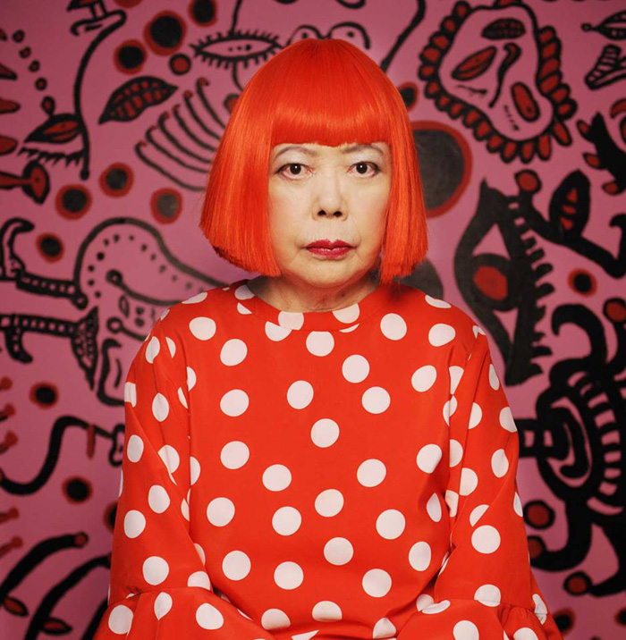

Caso abierto: ¡Mujeres artistas!
Querido alumnado de 1º de Primaria:
Ha pasado algo muy extraño en la biblioteca de nuestro pueblo… ¡y necesitamos vuestra ayuda!
Con motivo del Día de la Mujer, la biblioteca tenía guardados unos cuentos, dibujos y carteles muy importantes sobre varias mujeres artistas: pintoras, escultoras, escritoras, bailarinas, arquitectas y diseñadoras de moda. Pero, de repente… ¡han desaparecido! Nadie sabe quién se los ha llevado ni dónde están.
La gente de la biblioteca y del ayuntamiento está muy preocupada, y la policía ya está investigando. Pero hay muchas pistas que todavía no pueden resolver.
Por eso, han pensado en pedir ayuda a un grupo muy especial: vosotros, los niños y niñas de 1º de Primaria. Saben que sois inteligentes, curiosos y que os encanta investigar. ¿Os interesa?
Podéis ayudar de muchas maneras:
Buscando pistas para descubrir qué ha pasado.
Investigando en clase y en casa quiénes eran estas artistas.
Creando nuevos carteles, dibujos o pequeños textos para que la biblioteca pueda volver a tener información sobre ellas.
¿Os gustaría colaborar en esta misión tan importante para que todos podamos conocer mejor a estas mujeres artistas y su trabajo?
La biblioteca confía mucho en vosotros.
¡Gracias!
